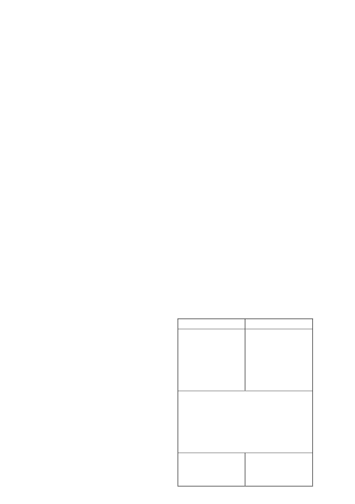

within one hour. They are transported acropetally (upwards) in the
xylem. This systemic translocation contributes to good distribution
of the active ingredients within the plant tissue and prevents them
from being washed off.
6. DIRECTIONS FOR USE
Use only as indicated
6.1
COMPATABILITY
The compatibility of
ARTEA
with other products may be influ-
enced by the formulation of the products involved as well as
the quality of the dilution water. Since the formulation of other
products may change without the knowledge of Syngenta and
the quality of water may vary from farm to farm, a compatibility
test should always be carried out prior to application.
ARTEA
is
compatible with most commonly used fungicides, insecticides
and foliar feeds normally used in the various crops.
6.2
MIXING INSTRUCTIONS
Replace cap after use
Fill
1
/
4
-
1
/
3
of the spray tank with clean water, start agitation and
add the calculated and measured quantity of product. Continue to
fill the spray tank while continuing agitation. When filling the spray
tank, the filling hose should always be above water level in order
to prevent back siphoning.
Ensure thorough agitation of the mixture in the spray tank
during mixing and spraying.
Tank mixtures must be sprayed out immediately and not
allowed to stand in the spray tank.
6.3
APPLICATION
Influence of rain on application:
Should it rain within two hours after application, the application
must be repeated.
6.3.1 Ground Application
ARTEA
may be applied with conventional high volume spray
equipment. Calibrate the apparatus before application to ensure
that the correct dosage is applied. The distribution of the spray
mixture must be uniform throughout the target area.
Ensure good coverage of the whole plant (the stems and leaves)
by using enough water and suitable spraying equipment.
6.3.2 Aerial Application
Avoid chemical drift at all times
Aerial application of this product may only be done by a regi stered
aerial application operator using a correctly calibrated, regi stered
aircraft according to the instructions of SANS 10118 (Aerial
Application of Agricultural Remedies). It is important to ensure
that the spray mixture is distributed evenly over the target area
and that the loss of spray material during application is restricted
to a minimum. It is therefore essential that the following criteria
are met:
a) Application parameters:
•
Volume
: A volume of 30 - 40
l
/ha is recommended. As this
product has not been evaluated at a reduced volume rate,
the registration holder cannot guarantee efficacy or be held
responsible for any adverse effects if the product is applied
aerially at a lower volume rate than recommended above.
•
Droplet coverage
: A droplet coverage of 25
- 30
droplets
per cm² must be recovered at the target.
•
Droplet size
: A droplet spectrum with a VMD of 280 - 300
microns is recommended. Ensure that the production of fine
droplets (less than 150 microns - high drift & evaporation
potential) is restricted to a minimum.
•
Flying height
: The height of the spray boom should be
maintained at 3 - 4 metres above the target. Do not spray
when aircraft is in a climb, at the top or during a dive, or when
banking.
ARTEA
/ 2
b) Equipment:
•
Use suitable atomising equipment (hydraulic nozzles or rotary
atomisers) that will produce the desired droplet size and cover-
age but which will ensure the minimum loss of product either
through endodrift (within target field) or exodrift (outside target
field).
•
The operator must use a setup that will produce a droplet
spectrum with the lowest possible relative span.
•
All nozzles / atomisers should be positioned within the inner
60% to 75% of the wingspan to prevent droplets from entering
the wingtip vortices.
c) Meteorological conditions:
•
The difference in temperature between the wet and dry bulb
thermometers, of a whirling hygrometer, should not exceed
8°C. The addition of a suitable anti-evaporant is recommend-
ed if the VMD of the droplets is less than 200 - 250 microns.
•
Only spray if the wind speed is between 5 - 15 km/h.
•
Aerial application of this product must not be done under
turbulent, unstable conditions during the heat of the day when
rising thermals and downdraughts occur.
•
Also note that the application of this product under tempera-
ture inversion conditions (spraying in or above the inversion
layer) may lead to the following:
-
Reduced efficacy due to suspension and evaporation of
small droplets in the air (inadequate coverage).
-
Damage to other sensitive crops and or non-target areas
through the movement of the suspended spray cloud away
from the target field.
•
Under the following climatic conditions drift could occur more
than 3 to 5 km from the nearest spray path of the aircraft:
- Cloudy weather with relative humidity above 80 % and low
air movement of less than 5 km per hour. When such condi-
tions prevail, aerial application should
NOT
be carried out.
•
Ensure that the aerial spray operator knows which fields to
spray. Supply the precise identification to the operator of the
fields to be sprayed preferably by means of a map or GPS
coordinates. Indicate to the operator adjacent environmental
sensitive areas or sensitive neighbouring crops, beehives or
water sources that could be affected by the pesticide.
•
Obtain an assurance from the aerial spray operator that the
above requirements will be met and that relevant data will be
compiled in a logbook and kept for future reference.
7. RECOMMENDATIONS
For the best results, study the sections under 3 and 6.1 to 6.3
thoroughly.
CROP/DISEASE
DOSAGE
BARLEY
Leaf spot
(
Rhynchosporium secalis
)
Net blotch
(
Pyrenophora teres
)
Leaf rust
(
Puccinia hordei
)
Powdery Mildew
(
Erysiphe graminis
)
Ground and
aerial application
400 - 500 m
l
/ha
REMARKS:
•
If infection appears early in the season apply at a rate of 400
m
l
/ha. Do not apply later than the 6-leaf stage (37 - 51
BBCH).
• Follow up with a spray at flag leaf appearance at a rate of
400 or 500 m
l
/ha depending on the prevalent weather con-
ditions.
• Apply the higher rate when weather conditions favour dis-
ease development.
• For a single application, apply 500 m
l
/ha at flag leaf stage.
WHEAT
Eyespot
(
Pseudocercosporella
herpotrichoides
)
Ground and
aerial application
500 m
l
/ha
7.1
BARLEY AND WHEAT
